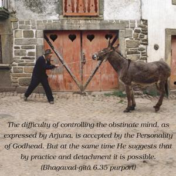
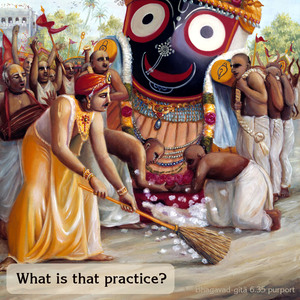
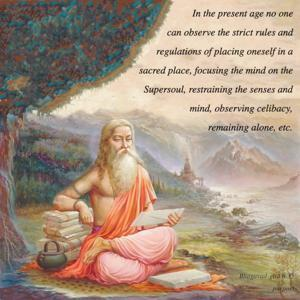

Lord Śrī Kṛṣṇa said: O mighty-armed son of Kuntī, it is undoubtedly very difficult to curb the restless mind, but it is possible by suitable practice and by detachment.



The difficulty of controlling the obstinate mind, as expressed by Arjuna, is accepted by the Personality of Godhead. But at the same time He suggests that by practice and detachment it is possible. What is that practice? In the present age no one can observe the strict rules and regulations of placing oneself in a sacred place, focusing the mind on the Supersoul, restraining the senses and mind, observing celibacy, remaining alone, etc. By the practice of Kṛṣṇa consciousness, however, one engages in nine types of devotional service to the Lord. The first and foremost of such devotional engagements is hearing about Kṛṣṇa. This is a very powerful transcendental method for purging the mind of all misgivings. The more one hears about Kṛṣṇa, the more one becomes enlightened and detached from everything that draws the mind away from Kṛṣṇa. By detaching the mind from activities not devoted to the Lord, one can very easily learn vairāgya. Vairāgya means detachment from matter and engagement of the mind in spirit. Impersonal spiritual detachment is more difficult than attaching the mind to the activities of Kṛṣṇa. This is practical because by hearing about Kṛṣṇa one becomes automatically attached to the Supreme Spirit. This attachment is called pareśānubhava, spiritual satisfaction. It is just like the feeling of satisfaction a hungry man has for every morsel of food he eats. The more one eats while hungry, the more one feels satisfaction and strength. Similarly, by discharge of devotional service one feels transcendental satisfaction as the mind becomes detached from material objectives. It is something like curing a disease by expert treatment and appropriate diet. Hearing of the transcendental activities of Lord Kṛṣṇa is therefore expert treatment for the mad mind, and eating the foodstuff offered to Kṛṣṇa is the appropriate diet for the suffering patient. This treatment is the process of Kṛṣṇa consciousness.